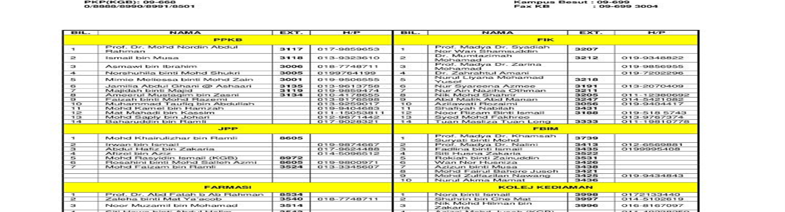
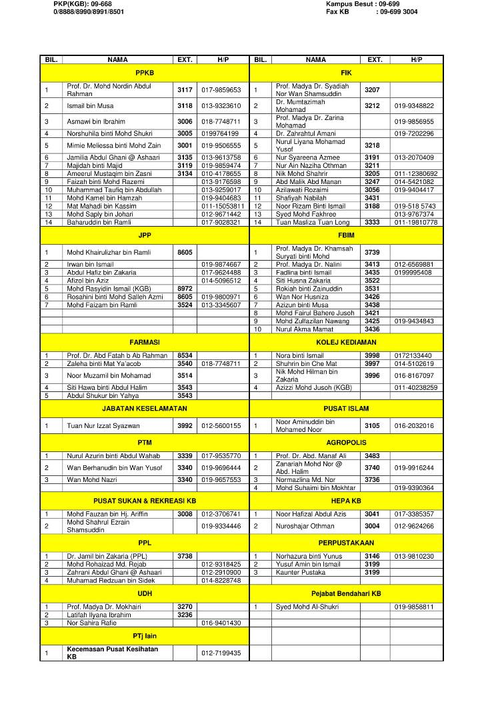
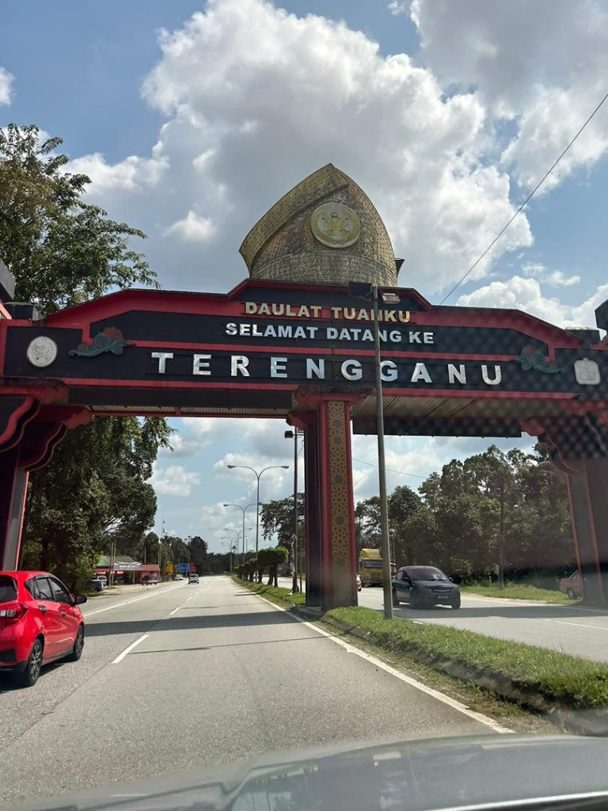
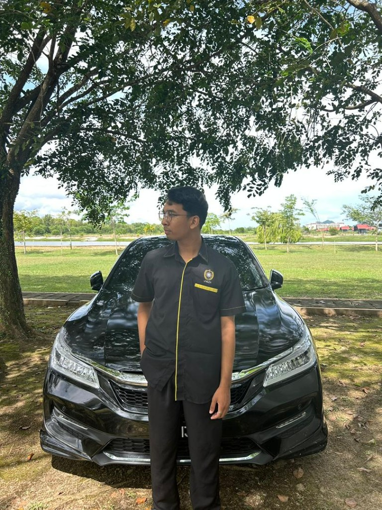
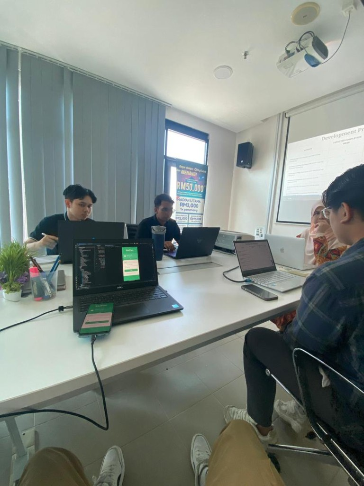
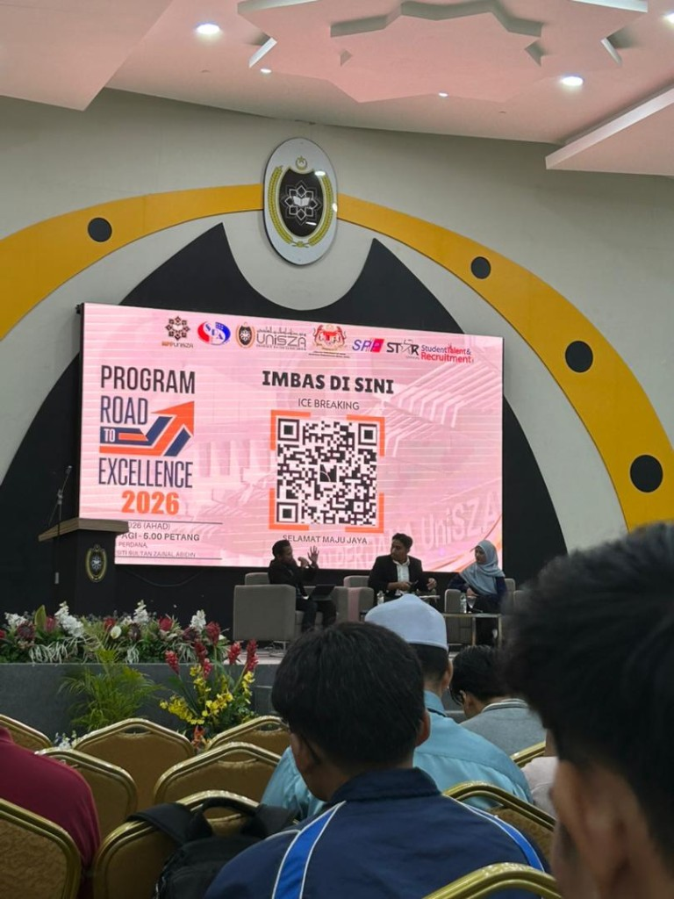
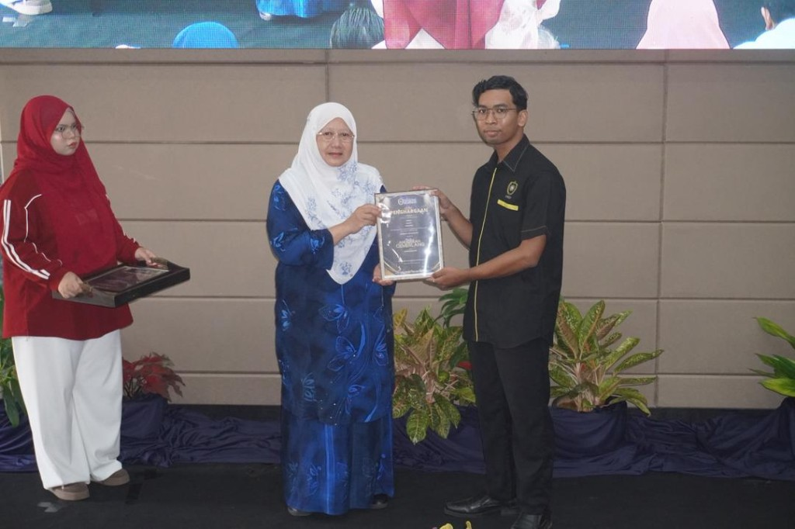

{kind=link}
Three Schools
School of Computer Science, School of Information Technology, and School of Multimedia. My programme sits under Computer Science.

Official campus photo from UniSZA Kampus Besut. Home of Fakulti Informatik dan Komputeran where I study Software Development.
Universiti Sultan Zainal Abidin
UniSZA Kampus Besut is the newest and largest campus of Universiti Sultan Zainal Abidin, operating since 2013 across 956 acres of peaceful natural landscape in Besut, Terengganu. It hosts three faculties, including Fakulti Informatik dan Komputeran (FIK), plus the Central Laboratory Management Centre (CLMC).
I am pursuing Bachelor of Computer Science (Software Development) with Honours under the School of Computer Science at FIK. This page documents my real study environment, daily campus life, and the journey that shaped my degree experience.

Faculty of Informatics and Computing at UniSZA Kampus Besut. Teaching, research, and community service since 2006.
School of Computer Science, School of Information Technology, and School of Multimedia. My programme sits under Computer Science.
Bachelor of Computer Science (Software Development) with Honours. Web systems, programming, databases, software engineering, and project-based learning.
FIK research and innovation arm. ICT services, professional training, co-working space, lab booking, and industry collaboration.
UniSZA Kampus Besut, 22200 Tembila, Besut, Terengganu
Tel: 09-819 3200 · fik@unisza.edu.my
Facilities at UniSZA Kampus Besut that support my Software Development degree every day.
Hands-on coding for Web Services, programming modules, and integrated assessment systems in FIK labs.
Library with study spaces, discussion rooms, thesis rooms, and capacity for 500 users at Besut Campus.
Academic complex with two auditoriums, Senate meeting room, seminar rooms, and 12 lecture halls.
Taman Rimba Ilmu Ramah Bris. Tropical forest preservation for a sustainable campus environment.

Real photos from my life at FIK, Besut Campus. Each moment reflects how I learn, collaborate, and grow as a Software Development student.

My degree journey begins with the trip to Terengganu. Crossing the welcome gateway reminds me that studying at UniSZA Besut is a commitment to grow far from home and build discipline in a focused campus environment.

On campus grounds I represent Fakulti Informatik dan Komputeran with pride. FIK is where I attend lectures, complete assignments, and connect with lecturers and peers in the Software Development programme.

FIK computer labs are where theory becomes practice. During Web Services and other modules I build real systems, test portals, and complete integrated assessments in a professional lab setting.

Group projects and presentations happen in FIK meeting spaces equipped with screens and seating for teams. This is where we plan features, review code, and prepare deliverables before submission.

Beyond lectures I spend hours coding, testing mobile apps, and presenting progress to teammates. These sessions trained me to work like a real software developer under deadlines and team expectations.

Learning with my cohort and lecturers keeps me motivated. Group photos like this capture the community spirit at FIK where we share knowledge, support each other, and push for Dean's List performance together.

UniSZA hosts career programmes like Road to Excellence with industry partners. These events help me understand internship expectations and prepare for professional roles after graduation.

Walking on stage for Anugerah Cemerlang was a defining moment of my journey. It reflects consistent Dean's List performance and the discipline I built throughout my years at FIK, Besut Campus.
Official 360° virtual tours from UniSZA. Walk through Kampus Besut and the library from anywhere.
Interactive virtual tour of UniSZA Besut Campus grounds and buildings.
Launch Tour →Explore the library interior, study areas, stacks, and facilities at Besut Campus.
Launch Tour →Compare Gong Badak, Besut, and Medical campuses on the official UniSZA hub.
Visit UniSZA →{kind=link}
{kind=link}
{kind=link}
{kind=link}
{kind=link}